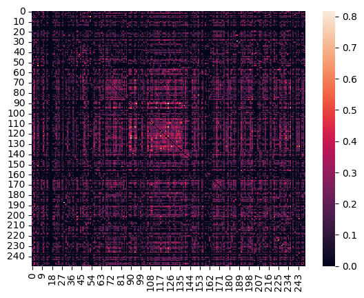
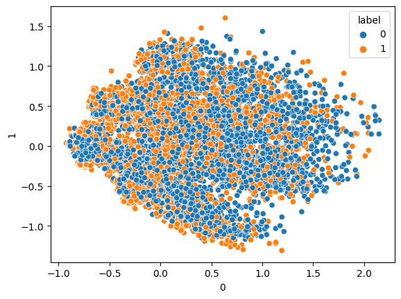
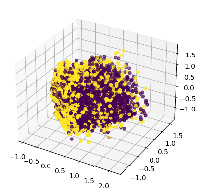
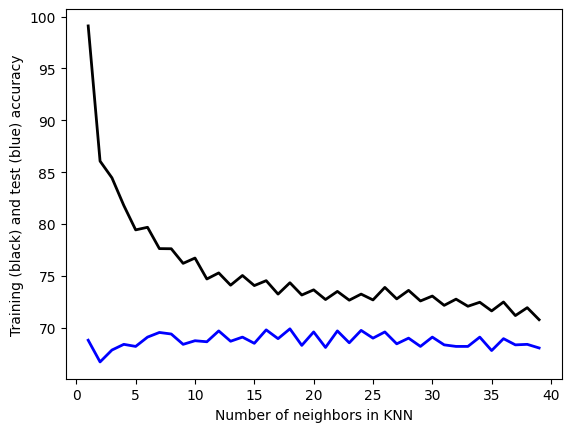

import matplotlib.pyplot as plt
import string
from nltk.stem import WordNetLemmatizer
from nltk.stem import PorterStemmer
from nltk.sentiment import SentimentIntensityAnalyzer
import pandas as pd
from sklearn.feature_extraction.text import CountVectorizer
import numpy as np
import nltkfrom sklearn.feature_extraction.text import CountVectorizer
from sklearn.metrics import accuracy_score, cohen_kappa_score, f1_score, classification_report
from sklearn.model_selection import StratifiedKFold, train_test_split
from sklearn.naive_bayes import MultinomialNBnltk.download('vader_lexicon')
nltk.download('punkt')
nltk.download('wordnet')
nltk.download('omw-1.4')[nltk_data] Downloading package vader_lexicon to
[nltk_data] /Users/zhu/nltk_data...
[nltk_data] Package vader_lexicon is already up-to-date!
[nltk_data] Downloading package punkt to /Users/zhu/nltk_data...
[nltk_data] Package punkt is already up-to-date!
[nltk_data] Downloading package wordnet to /Users/zhu/nltk_data...
[nltk_data] Package wordnet is already up-to-date!
[nltk_data] Downloading package omw-1.4 to /Users/zhu/nltk_data...
[nltk_data] Package omw-1.4 is already up-to-date!True#RELOAD FILE
df=pd.read_csv('cleaned_tweets.csv')
print(df.shape)
#CONVERT FROM STRING LABELS TO INTEGERS
labels=[]; #y1=[]; y2=[]
y1=[]
for label in df["label"]:
if label not in labels:
labels.append(label)
print("index =",len(labels)-1,": label =",label)
for i in range(0,len(labels)):
if(label==labels[i]):
y1.append(i)
y1=np.array(y1)
# CONVERT DF TO LIST OF STRINGS
corpus=df["tweets"].to_list()
print("number of text chunks = ",len(corpus))
print(corpus[0:3])(10029, 3)
index = 0 : label = 0
index = 1 : label = 1
number of text chunks = 10029
[' no sé si das más pena tú o tu terrible ortografía\x85 pinche naca', ' cuando todo se va al infierno la gente que está a tu lado sin vacilar es tu familia', ' en 1800 nace natturner el esclavo rebelde del sur de estadosunidos ']# INITIALIZE COUNT VECTORIZER
# minDF = 0.01 means "ignore terms that appear in less than 1% of the documents".
# minDF = 5 means "ignore terms that appear in less than 5 documents".
vectorizer=CountVectorizer(min_df=0.001)
# RUN COUNT VECTORIZER ON OUR COURPUS
Xs = vectorizer.fit_transform(corpus)
X=np.array(Xs.todense())
#CONVERT TO ONE-HOT VECTORS
maxs=np.max(X,axis=0)
X=np.ceil(X/maxs)
# DOUBLE CHECK
print(X.shape,y1.shape)(10029, 1113) (10029,)num_rows_keep=250
index=np.sort(np.random.choice(X.shape[0], num_rows_keep, replace=False))
# print(y1[index])
# print(index)
tmp1=X[index, :]
# print(tmp1.shape,tmp1.dtype,tmp1[:,].shape)
#COMPUTE DISTANCE MATRIX
dij=[]
#LOOP OVER ROWS
for i in range(0,tmp1.shape[0]):
tmp2=[]
#LOOP OVER ROWS
for j in range(0,tmp1.shape[0]):
#EXTRACT VECTORS
vi=tmp1[i,:]
vj=tmp1[j,:]
#print(vi.shape,vj.shape)
#COMPUTE DISTANCES
dist=np.dot(vi, vj)/(np.linalg.norm(vi)*np.linalg.norm(vj)) #cosine sim
#dist=np.linalg.norm(vi-vj) #euclidean
# BUILD DISTANCE MATRIX
if(i==j or np.max(vi) == 0 or np.max(vj)==0):
tmp2.append(0)
else:
tmp2.append(dist)
dij.append(tmp2); #print(dij)
# raise
dij=np.array(dij)
#normalize
# dij=(dij-np.min(dij))/(np.max(dij)-np.min(dij))
#Lower triangle of an array.
# dij=np.sort(dij,axis=0)
# dij=np.sort(dij,axis=1)
# dij=np.tril(dij, k=-1)
import seaborn as sns
# sns.heatmap(np.exp(dij), annot=False) #, linewidths=.05)
heatmap = sns.heatmap(dij, annot=False) #, linewidths=.05)
heatmap.figure.savefig("heatmap.png")
print(dij.shape)
print(dij)/var/folders/kw/y1wfcqhd7nz_cc11ydrrc7cr0000gn/T/ipykernel_89460/1203232167.py:23: RuntimeWarning: invalid value encountered in double_scalars
dist=np.dot(vi, vj)/(np.linalg.norm(vi)*np.linalg.norm(vj)) #cosine sim(250, 250)
[[0. 0. 0. ... 0. 0. 0. ]
[0. 0. 0.11111111 ... 0. 0.28867513 0.16666667]
[0. 0.11111111 0. ... 0.40201513 0.38490018 0. ]
...
[0. 0. 0.40201513 ... 0. 0.43519414 0. ]
[0. 0.28867513 0.38490018 ... 0.43519414 0. 0. ]
[0. 0.16666667 0. ... 0. 0. 0. ]]
from sklearn.decomposition import PCA
# COMPUTE PCA WITH 10 COMPONENTS
pca = PCA(n_components=10)
pca.fit(X)
print(pca.explained_variance_ratio_)
print(pca.singular_values_)
# GET PRINCIPLE COMPONENT PROJECTIONS
principal_components = pca.fit_transform(X)
df2 = pd.DataFrame(data = principal_components) #, columns = ['PC1','PC2','PC3','PC4','PC5'])
df3=pd.concat([df2,df['label']], axis=1)
# FIRST TWO COMPONENTS
sns.scatterplot(data=df2, x=0, y=1,hue=df["label"])
plt.show()
#3D PLOT
ax = plt.axes(projection='3d')
ax.scatter3D(df2[0], df2[1], df2[2], c=y1);
plt.show()
#PAIRPLOT
tweet_pairplot = sns.pairplot(data=df3,hue="label") #.to_numpy()) #,hue=df["label"]) #, hue="time")
# tweet_pairplot.figure.savefig("tweet_pairplot.png")
tweet_pairplot
tweet_pairplot.figure.savefig("tweet_pairplot.png")[0.05152696 0.03284952 0.02594211 0.02397741 0.02249751 0.02129862
0.01943791 0.01824908 0.01569624 0.01521384]
[62.62769714 50.00502732 44.43772559 42.72187939 41.3824672 40.26473864
38.46572407 37.27088324 34.56583461 34.03051514]


import matplotlib.pyplot as plt
import pandas as pd
from sklearn.feature_extraction.text import CountVectorizer
import numpy as np
from sklearn.metrics import accuracy_score# split the dataset into train and test
df_train, df_test = train_test_split(df, test_size=0.20)# INITIALIZE COUNT VECTORIZER
# minDF = 0.01 means "ignore terms that appear in less than 1% of the documents".
# minDF = 5 means "ignore terms that appear in less than 5 documents".
vectorizer=CountVectorizer(min_df=0.001)
# RUN COUNT VECTORIZER ON OUR COURPUS
Xs = vectorizer.fit_transform(corpus)
X=np.array(Xs.todense())
#CONVERT TO ONE-HOT VECTORS
maxs=np.max(X,axis=0)
X=np.ceil(X/maxs)
# DOUBLE CHECK
print(X.shape,y1.shape)
print("DATA POINT-0:",X[0,0:10],"y1 =",y1[0])(10029, 1113) (10029,)
DATA POINT-0: [0. 0. 0. 0. 0. 0. 0. 0. 0. 0.] y1 = 0print(y1[300:400])[0 1 0 0 0 0 1 0 0 0 0 0 0 0 0 0 1 1 0 1 0 0 0 0 0 0 0 0 0 0 1 0 0 1 0 0 0
0 1 0 0 0 0 1 0 0 0 0 1 0 0 1 0 1 0 0 0 0 0 0 1 1 0 0 1 0 1 0 1 1 0 0 0 0
0 0 0 0 0 0 1 0 0 1 0 0 0 0 0 0 0 0 0 0 0 0 0 0 0 0]from sklearn.model_selection import train_test_split
test_ratio=0.2
# SPLIT ARRAYS OR MATRICES INTO RANDOM TRAIN AND TEST SUBSETS.
x_train, x_test, y_train, y_test = train_test_split(X, y1, test_size=test_ratio, random_state=0)
y_train=y_train.flatten()
y_test=y_test.flatten()
print("x_train.shape :",x_train.shape)
print("y_train.shape :",y_train.shape)
print("X_test.shape :",x_test.shape)
print("y_test.shape :",y_test.shape)x_train.shape : (8023, 1113)
y_train.shape : (8023,)
X_test.shape : (2006, 1113)
y_test.shape : (2006,)#CHECK TO MAKE SURE IT WAS RANDOMIZED
print(y_train[0:100])[0 0 1 1 0 0 1 1 1 0 0 1 0 1 0 0 0 0 0 1 0 1 1 0 0 0 0 0 1 0 1 1 0 0 0 0 1
1 1 0 0 0 0 0 1 1 1 1 0 0 1 0 1 1 1 1 1 0 0 0 0 1 1 0 0 1 0 0 1 1 1 0 0 1
1 0 1 0 0 0 1 0 0 0 1 1 1 1 1 1 0 1 0 1 1 1 0 0 1 0]def report(y,ypred):
#ACCURACY COMPUTE
print("Accuracy:",accuracy_score(y, ypred)*100)
print("Number of mislabeled points out of a total %d points = %d"
% (y.shape[0], (y != ypred).sum()))
def print_model_summary():
# LABEL PREDICTIONS FOR TRAINING AND TEST SET
yp_train = model.predict(x_train)
yp_test = model.predict(x_test)
print("ACCURACY CALCULATION\n")
print("TRAINING SET:")
report(y_train,yp_train)
print("\nTEST SET (UNTRAINED DATA):")
report(y_test,yp_test)
print("\nCHECK FIRST 20 PREDICTIONS")
print("TRAINING SET:")
print(y_train[0:20])
print(yp_train[0:20])
print("ERRORS:",yp_train[0:20]-y_train[0:20])
print("\nTEST SET (UNTRAINED DATA):")
print(y_test[0:20])
print(yp_test[0:20])
print("ERRORS:",yp_test[0:20]-y_test[0:20])from sklearn.naive_bayes import MultinomialNB
# INITIALIZE MODEL
model = MultinomialNB()
# TRAIN MODEL
model.fit(x_train,y_train)
# PRINT REPORT USING UTILITY FUNCTION ABOVE
print_model_summary()ACCURACY CALCULATION
TRAINING SET:
Accuracy: 82.53770410071046
Number of mislabeled points out of a total 8023 points = 1401
TEST SET (UNTRAINED DATA):
Accuracy: 77.96610169491525
Number of mislabeled points out of a total 2006 points = 442
CHECK FIRST 20 PREDICTIONS
TRAINING SET:
[0 0 1 1 0 0 1 1 1 0 0 1 0 1 0 0 0 0 0 1]
[1 0 0 1 0 0 1 1 1 1 1 1 0 1 1 0 0 0 0 1]
ERRORS: [ 1 0 -1 0 0 0 0 0 0 1 1 0 0 0 1 0 0 0 0 0]
TEST SET (UNTRAINED DATA):
[0 0 1 1 1 1 0 0 0 1 1 1 1 1 0 0 1 0 1 0]
[0 0 1 1 1 1 0 1 0 1 1 1 1 0 1 0 0 0 0 0]
ERRORS: [ 0 0 0 0 0 0 0 1 0 0 0 0 0 -1 1 0 -1 0 -1 0]Below is KNN Classification Method
## Classification model-2: KNN
## Hyper-Parameter tuning
from sklearn.neighbors import KNeighborsClassifier
# HYPER PARAMETER SEARCH FOR OPTIMAL NUMBER OF NEIGHBORS
num_neighbors=[]
train_accuracy=[]
test_accuracy=[]
# LOOP OVER HYPER-PARAM
for i in range(1,40):
# INITIALIZE MODEL
model = KNeighborsClassifier(n_neighbors=i)
# TRAIN MODEL
model.fit(x_train,y_train)
# LABEL PREDICTIONS FOR TRAINING AND TEST SET
yp_train = model.predict(x_train)
yp_test = model.predict(x_test)
print("n_neighbors =",i)
acc1=accuracy_score(y_train, yp_train)*100
acc2=accuracy_score(y_test, yp_test)*100
num_neighbors.append(i)
train_accuracy.append(acc1)
test_accuracy.append(acc2)
print(" train accuracy:",acc1)
print(" test accuracy:" ,acc2)n_neighbors = 1
train accuracy: 99.10258008226349
test accuracy: 68.79361914257228
n_neighbors = 2
train accuracy: 86.0650629440359
test accuracy: 66.6999002991027
n_neighbors = 3
train accuracy: 84.45718559142466
test accuracy: 67.84646061814557
n_neighbors = 4
train accuracy: 81.78985416926336
test accuracy: 68.39481555333998
n_neighbors = 5
train accuracy: 79.43412688520503
test accuracy: 68.19541375872383
n_neighbors = 6
train accuracy: 79.6834101956874
test accuracy: 69.0927218344965
n_neighbors = 7
train accuracy: 77.6268228842079
test accuracy: 69.54137587238284
n_neighbors = 8
train accuracy: 77.61435871868379
test accuracy: 69.39182452642075
n_neighbors = 9
train accuracy: 76.20590801445843
test accuracy: 68.39481555333998
n_neighbors = 10
train accuracy: 76.71693880094728
test accuracy: 68.74376869391826
n_neighbors = 11
train accuracy: 74.69774398604014
test accuracy: 68.64406779661016
n_neighbors = 12
train accuracy: 75.28355976567369
test accuracy: 69.69092721834497
n_neighbors = 13
train accuracy: 74.09946404088247
test accuracy: 68.6939182452642
n_neighbors = 14
train accuracy: 75.03427645519133
test accuracy: 69.0927218344965
n_neighbors = 15
train accuracy: 74.0620715443101
test accuracy: 68.49451645064806
n_neighbors = 16
train accuracy: 74.5357098342266
test accuracy: 69.79062811565304
n_neighbors = 17
train accuracy: 73.23943661971832
test accuracy: 68.9431704885344
n_neighbors = 18
train accuracy: 74.33628318584071
test accuracy: 69.89032901296112
n_neighbors = 19
train accuracy: 73.15218746104948
test accuracy: 68.29511465603191
n_neighbors = 20
train accuracy: 73.65075408201422
test accuracy: 69.59122632103688
n_neighbors = 21
train accuracy: 72.71594166770534
test accuracy: 68.09571286141576
n_neighbors = 22
train accuracy: 73.5011840957248
test accuracy: 69.69092721834497
n_neighbors = 23
train accuracy: 72.65362084008476
test accuracy: 68.54436689930209
n_neighbors = 24
train accuracy: 73.23943661971832
test accuracy: 69.740777666999
n_neighbors = 25
train accuracy: 72.67854917113299
test accuracy: 68.99302093718843
n_neighbors = 26
train accuracy: 73.88757322697246
test accuracy: 69.59122632103688
n_neighbors = 27
train accuracy: 72.77826249532595
test accuracy: 68.44466600199401
n_neighbors = 28
train accuracy: 73.60089741991773
test accuracy: 68.99302093718843
n_neighbors = 29
train accuracy: 72.57883584694005
test accuracy: 68.19541375872383
n_neighbors = 30
train accuracy: 73.05247413685653
test accuracy: 69.0927218344965
n_neighbors = 31
train accuracy: 72.15505421912003
test accuracy: 68.34496510468594
n_neighbors = 32
train accuracy: 72.7533341642777
test accuracy: 68.19541375872383
n_neighbors = 33
train accuracy: 72.0678050604512
test accuracy: 68.19541375872383
n_neighbors = 34
train accuracy: 72.45419419169886
test accuracy: 69.0927218344965
n_neighbors = 35
train accuracy: 71.61909510158296
test accuracy: 67.79661016949152
n_neighbors = 36
train accuracy: 72.47912252274709
test accuracy: 68.9431704885344
n_neighbors = 37
train accuracy: 71.1703851427147
test accuracy: 68.34496510468594
n_neighbors = 38
train accuracy: 71.93069923968591
test accuracy: 68.39481555333998
n_neighbors = 39
train accuracy: 70.77153184594292
test accuracy: 68.04586241276172# Convergence plot
plt.plot(num_neighbors,train_accuracy ,linewidth=2, color='k')
plt.plot(num_neighbors,test_accuracy ,linewidth=2, color='b')
plt.xlabel("Number of neighbors in KNN")
plt.ylabel("Training (black) and test (blue) accuracy")
plt.savefig("convergence_plot.png")
# RETRAIN WITH OPTIMAL HYPER-PARAMETERS
# INITIALIZE MODEL
model = KNeighborsClassifier(n_neighbors=30)
# TRAIN MODEL
model.fit(x_train,y_train)
# PRINT REPORT USING UTILITY FUNCTION ABOVE
print_model_summary()ACCURACY CALCULATION
TRAINING SET:
Accuracy: 73.05247413685653
Number of mislabeled points out of a total 8023 points = 2162
TEST SET (UNTRAINED DATA):
Accuracy: 69.0927218344965
Number of mislabeled points out of a total 2006 points = 620
CHECK FIRST 20 PREDICTIONS
TRAINING SET:
[0 0 1 1 0 0 1 1 1 0 0 1 0 1 0 0 0 0 0 1]
[1 1 1 1 0 0 1 1 1 0 1 1 0 1 1 1 0 0 0 1]
ERRORS: [1 1 0 0 0 0 0 0 0 0 1 0 0 0 1 1 0 0 0 0]
TEST SET (UNTRAINED DATA):
[0 0 1 1 1 1 0 0 0 1 1 1 1 1 0 0 1 0 1 0]
[1 0 1 0 0 1 0 1 0 1 1 1 1 1 1 0 1 1 0 0]
ERRORS: [ 1 0 0 -1 -1 0 0 1 0 0 0 0 0 0 1 0 0 1 -1 0]